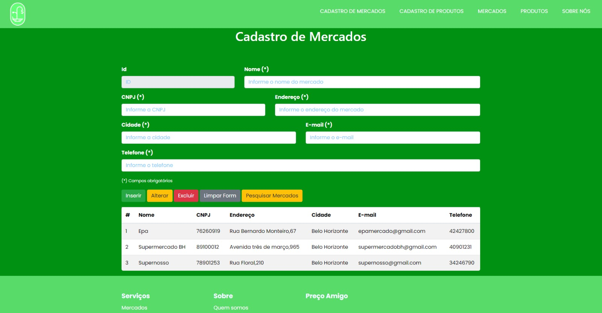

Introdução
Informações básicas do projeto como nome e membros da equipe.
Informações Gerais
- Projeto: [Preço Amigo]
- Repositório GitHub: Trabalho mercado Preço Amigo
- Membros da equipe:
Contexto
Detalhes sobre o espaço de problema, justificativas e os objetivos do projeto.
Problema
O problema que se busca resolver com este projeto é o de catalogar em que estabelecimento um determinado produto está com menor preço, visto que a falta de tempo faz com que as pessoas economizem em alguns produtos por sorte, mas paguem o dobro em outros.
Objetivos
Objetivo geral
O objetivo geral desse trabalho é desenvolver um software que exiba produtos de supermercados e informe em qual estabelecimento da região esse produto está com o menor preço.
Objetivo específico
Identificar os menores preços de cada produto e onde eles são ofertados; identificar os mercados mais próximos do usuário; fornecer funcionalidades que permitam identificar um produto específico; fornecer funcionalidades que permitam identificar as melhores ofertas.
Justificativa
Uma pessoa comum, no dia a dia, está sempre buscando economizar no dinheiro de alguma forma, pois sabe que é com base na análise, pesquisa e comparação de preços de produtos que se é possível economizar de verdade. Segundo o artigo “Crise Econômica no Brasil” do site “Toda matéria” de Juliana Bezerra, bacharel em História pela PUC-RJ, o Brasil começou a sofrer com uma crise econômica a partir de 2014. Dados do artigo “Crise e perspectivas para a economia brasileira” de Luiz Fernando de Paula e Manoel Pires mostram que, de 2015 a 2016, o país teve a taxa média de crescimento do PIB negativa de 3,7%, com a piora dos indicadores sociais. Os preços aumentaram consideravelmente e a maioria da população, majoritariamente de renda baixa, é que sofre com a falta de dinheiro no bolso para comprar itens básicos. E isso principalmente tem a ver com os produtos de supermercado que são cotidianamente consumidos por todos de uma forma ou de outra. Então, é motivado por ajudar essas pessoas que realmente precisam economizar que esse tema foi escolhido. Desse modo, esse estudo visa contribuir com a sociedade fornecendo informações úteis acerca de produtos de supermercado, focalizando no seu preço, permitindo que as pessoas saibam onde comprar pelo preço mais econômico e assim consigam economizar no dinheiro e no tempo gasto investigando os preços.
Público-alvo
Embora todas as pessoas possam se beneficiar de saber onde comprar um produto pelo menor preço, o público alvo deste trabalho está nas pessoas que realizam compras de supermercado cotidianamente, como donos de casa, homens e mulheres, jovens-adultos, adultos e idosos, que fazem uso frequente ou não de dispositivos tecnológicos, de renda média a baixa, enfim, pessoas que necessitam economizar dinheiro.
Concepção (Design Thinking)
Detalhes do processo de discovery do projeto.
Apresente o processo de discovery do projeto. Com foco na experiência do usuário, esse processo abrange a compreensão do contexto do problema e das características do usuário, a definição do problema, a geração de ideias, a prototipagem e a elaboração de uma proposta de solução
Processo de Design Thinking
O arquivo que se segue apresenta o resultado desse processo.
Apresente o processo de Design Thinking realizado pelo grupo e documentado por meio do software Miro. No documento apresentado, devem ser incluídos: (1) a matriz CSD, (2) o mapa de stakeholders, (3) as personas, (4) as respectivas propostas de valor e (5) o processo de ideação identificando as ideias levantadas e sua priorização.
Especificações do Projeto
Documentação das especificações do projeto.
Apresente as especificações do projeto, incluindo as histórias de usuário e os requisitos funcionais e não funcionais.
Histórias de Usuários
Com base na análise das personas foram identificadas as seguintes histórias de usuários:
Apresente aqui as histórias de usuário que são relevantes para o projeto de sua solução. As Histórias de Usuário consistem em uma ferramenta poderosa para a compreensão e elicitação dos requisitos funcionais e não funcionais da sua aplicação. Se possível, agrupe as histórias de usuário por contexto, para facilitar consultas recorrentes à essa parte do documento.
EU COMO...PERSONA |
QUERO/PRECISO...FUNCIONALIDADE
|
PARA...MOTIVO/VALOR |
|---|---|---|
| Usuário do sistema | Achar facilmente o produto que preciso pelo menor preço | Economizar tempo e dinheiro nas compras |
| Administrador | Cadastrar produtos e mercados | Gerar mais opções de produtos e estabelecimentos |
Requisitos
As tabelas que se seguem apresentam os requisitos funcionais e não funcionais que detalham o escopo do projeto.
Com base nas Histórias de Usuário, enumere os requisitos da sua solução. Classifique esses requisitos em dois grupos:
- Requisitos Funcionais (RF): correspondem a uma funcionalidade que deve estar presente na plataforma (ex: cadastro de usuário).
- Requisitos Não Funcionais (RNF): correspondem a uma característica técnica, seja de usabilidade, desempenho, confiabilidade, segurança ou outro (ex: suporte a dispositivos iOS e Android).
Lembre-se que cada requisito deve corresponder à uma e somente uma característica alvo da sua solução. Além disso, certifique-se de que todos os aspectos capturados nas Histórias de Usuário foram cobertos.
Requisitos Funcionais
| ID | Descrição do Requisito | Prioridade |
|---|---|---|
| RF-001 | Tela inicial: O software deve apresentar na página inicial as principais informações referentes aos produtos ofertados, mercados cadastrados e possuir um menu superior com link para as telas de cadastro e listagem de dados | ALTA |
| RF-002 | O software deve apresentar, para cada produto, uma imagem correspondente | MÉDIA |
| RF-003 | O software deve apresentar uma tela que exiba o nome do produto, uma foto correspondente, preço, categoria, descrição e os mercados onde são ofertados com seus respectivos preços | ALTA |
| RF-004 | O software deve oferecer um mecanismo de busca interno eficaz que ajuda os usuários a encontrar rapidamente produtos específicos no site | ALTA |
| RF-005 | O software deve apresentar uma tela de “mercados”, em que exibe os mercados cadastrados | ALTA |
| RF-006 | Cadastrar mercados: O software deve ter a capacidade de que seja cadastrado e armazenado informações referentes aos estabelecimentos | ALTA |
| RF-007 | Cadastrar produtos: O software deve ter a capacidade de que seja cadastrado e armazenado informações referentes aos produtos | ALTA |
Requisitos Não-Funcionais
| ID | Descrição do Requisito | Prioridade |
|---|---|---|
| RNF-001 | O software deve ser publicado em um ambiente acessível publicamente na Internet | ALTA |
| RNF-002 | Design Responsivo: O software deve ser otimizado para funcionar bem em dispositivos móveis, tablets e desktops, garantindo uma experiência consistente em todas as telas | ALTA |
| RNF-003 | O software deve ter bom nível de contraste entre os elementos da tela | MÉDIA |
| RNF-004 | O software deve ser compatível com os principais navegadores | ALTA |
| RNF-005 | Navegação Intuitiva: O menu de navegação deve ser claro e fácil de usar, com uma estrutura lógica que permite aos usuários encontrar facilmente o que estão procurando | ALTA |
| RNF-006 | Conteúdo de Qualidade: O software deve fornecer conteúdo informativo, relevante e atualizado que atenda às necessidades dos usuários | ALTA |
| RNF-007 | Backup e Manutenção: O software deverá manter backups regulares do site e realizar manutenção para garantir que ele funcione sem problemas | MÉDIA |
Projeto de Interface
Artefatos relacionados com a interface e a interacão do usuário na proposta de solução.
Apresente a ideia de interface que está sendo prevista para o projeto. Inclua os wireframes, o user/screen flow e o protótipo interativo.
User/Screen Flow e Protótipo interativo
Artefatos relacionados com a interface e a interacão do usuário na solução proposta.
O fluxo de usuário (User Flow) é uma técnica que permite
ao desenvolvedor mapear todo fluxo de telas do site ou
app. Essa técnica funciona para alinhar os caminhos e as
possíveis ações que o usuário pode fazer junto com os
membros de sua equipe.

Um protótipo interativo apresenta o projeto de interfaces
e permite ao usuário navegar pelas funcionalidades como se
estivesse lidando com o software pronto. Veja o exemplo a
seguir.
Wireframes
Protótipo de telas do sistema em baixa fidelidade (rascunhos).
Os Wireframes são protótipos das telas da aplicação usados
em design de interface para sugerir a estrutura de um site
web e seu relacionamentos entre suas páginas. Um wireframe
web é uma ilustração semelhante ao layout de elementos
fundamentais na interface.

Página ínicial
Página de cadastro
Página de login
Página de ofertas
Página de lista de mercados
Página de mercado
Página de produto
Metodologia
Detalhes sobre a organização do grupo e o ferramental empregado.
Nesta parte do documento, você deve apresentar a metodologia adotada pelo grupo, descrevendo o processo de trabalho baseado nas metodologias ágeis, a divisão de papéis e tarefas, as ferramentas empregadas e como foi realizada agestão de configuração do projeto via GitHub.
Coloque detalhes sobre o processo de Design Thinking e a implementação do Framework Scrum seguido pelo grupo. O grupo poderá fazer uso de ferramentas on-line para acompanhar o andamento do projeto, a execução das tarefas e o status de desenvolvimento da solução.
Ferramentas
Relação de ferramentas empregadas pelo grupo durante o projeto.
Liste as ferramentas empregadas no desenvolvimento do projeto, justificando a escolha delas, sempre que possível. Inclua itens como: (1) Editor de código, ferramentas de comunicação, ferramentas de diagramação, plataformas de hospedagem, entre outras.
| Ambiente | Plataforma | Link de Acesso |
|---|---|---|
| Processo de Design Thinking | Miro | https://miro.com/XXXXXXXEXEMPLO |
| Repositório de código | GitHub | https://github.com/Preço amigo |
| Hospedagem do site | Heroku | https://XXXXXXX.herokuapp.comEXEMPLO |
| Protótipo Interativo | MavelApp ou Figma | https://figma.com/prototipo |
Gestão do Projeto
Divisão de papéis no grupo e apresentação da estrutura da ferramenta de controle de tarefas (Kanban).
Apresente a divisão de papéis e tarefas entre os membros do grupo. Informe quem é o Scrum Master, o Product Owner e os desenvolvedores. Informe também quem é o responsável pela documentação do projeto.
Apresente o quadro de gerenciamento do time (Kanban), seu formato e as experiências na utilização dessa ferramenta (GitHub Projects)
...... COLOQUE AQUI O SEU TEXTO ......
Controle de Versão
Estrutura do fluxo de trabalho no ambiente do GitHub.
Discuta como a configuração do projeto foi feita na
ferramenta de versionamento (GitHub). Exponha como a
gerência de tags, merges, commits e branchs é realizada.
Discuta como a gerência de issues foi realizada.

...... COLOQUE AQUI O SEU TEXTO ......
Solução
Esta seção apresenta todos os detalhes da solução criada no projeto.
Apresente cada uma das funcionalidades que a aplicação fornece tanto para os usuários quanto aos administradores da solução.
Inclua, para cada funcionalidade, itens como: (1) titulos e descrição da funcionalidade; (2) Estrutura de dados associada; (3) o detalhe sobre as instruções de acesso e uso.
Video do Projeto
O vídeo a seguir traz uma apresentação do problema que a equipe está tratando e a proposta de solução.
O video de apresentação é voltado para que o público externo possa conhecer a solução. O formato é livre, sendo importante que seja apresentado o problema e a solução numa linguagem descomplicada e direta.
Utilize o recurso de compartilhamento via embed e inclua o vídeo logo abaixo.
...... COLOQUE AQUI O SEU VIDEO ......
Funcionalidades
Esta seção apresenta as funcionalidades da solução.
Apresente cada uma das funcionalidades que a aplicação fornece tanto para os usuários quanto aos administradores da solução.
Inclua, para cada funcionalidade, itens como: (1) titulos e descrição da funcionalidade; (2) Estrutura de dados associada; (3) o detalhe sobre as instruções de acesso e uso.
Funcionalidade 1 - Cadastro de Produtos
Permite a inclusão, leitura, alteração e exclusão de produtos para o sistema
- Estrutura de dados:
-
Instruções de acesso:
- Abra o site e efetue o login
- Acesse o menu principal e escolha a opção Cadastro de Produtos

Funcionalidade 2 - Cadastro de Mercados
Permite a inclusão, leitura, alteração e exclusão de contatos para o sistema
-
Estrutura de dados:
Mercado{ Id: 1, Nome: “Epa”, Cnpj: “90751241790045”, Endereco: “Rua Bernardo Monteiro, 426”, Cidade: “Belo Horizonte”, Email: “epamercado@gmail.com”, Telefone: “31-3432 0053” }
-
Instruções de acesso:
- Abra o site e efetue o login
- Acesse o menu principal e escolha a opção Cadastro de Mercados

Funcionalidade 3 - Cadastro de Categorias
Permite a inclusão, leitura, alteração e exclusão de categorias para o sistema
-
Estrutura de dados:
Categorias{ Id: 1, Nome: “Alimentos”, Similares: “Temperos”, Descrição: “Saco de arroz” }
-
Instruções de acesso:
- Abra o site e efetue o login
- Acesse o menu principal e escolha a opção Cadastro de Categorias
Funcionalidade 4 - Cadastro de Promoções
Permite a inclusão, leitura, alteração e exclusão de promoções para o sistema
-
Estrutura de dados:
Promoções{ Id: 1, Valor da promoção: 33.99, Mercado: "Epa", Descrição: “Compre 2 leve 3” }
-
Instruções de acesso:
- Abra o site e efetue o login
- Acesse o menu principal e escolha a opção Cadastro de Promoções
Funcionalidade 5 - Detalhes do produto
Permite a visualização dos detalhes do produto
-
Estrutura de dados:
“produto”: [ { “id”= 2; “foto”= ”image.jpg”; “preco”= ”12.50”; “descricao”= ”etc etc etc”; “local”= “APIgooglemaps.com” }
-
Instruções de acesso:
- Abra o site e efetue o login
- Acesse o menu principal e escolha a opção Produtos
- Clique em um produto
Funcionalidade 6 - Histórico de Produtos
Exibe os produtos visualizados pelo usuário
- Estrutura de dados:
-
Instruções de acesso:
- Abra o site e efetue o login
- Acesse o menu principal e clique no icone de usuario
Funcionalidade 7 - Favoritos
Mecanismo de salvamento de produto favoritado
- Estrutura de dados:
-
Instruções de acesso:
- Abra o site e efetue o login
- Acesse o menu principal e escolha a opção Produtos
- Clique em Produtos favoritados
Estruturas de Dados
Descrição das estruturas de dados utilizadas na solução com exemplos no formato JSON.
Apresente as estruturas de dados utilizadas na solução tanto para dados utilizados na essência da aplicação quanto outras estruturas que foram criadas para algum tipo de configuração
Nomeie a estrutura, coloque uma descrição sucinta e apresente um exemplo em formato JSON.
Wireframes
Protótipo de telas do sistema em baixa fidelidade (rascunhos).
Os Wireframes são protótipos das telas da aplicação usados em design de interface para sugerir a
estrutura de um site web e seu relacionamentos entre suas páginas. Um wireframe web é uma ilustração
semelhante ao layout de elementos fundamentais na interface.
Metodologia
Detalhes sobre a organização do grupo e o ferramental empregado.
Nesta parte do documento, você deve apresentar a metodologia adotada pelo grupo, descrevendo o processo de trabalho baseado nas metodologias ágeis, a divisão de papéis e tarefas, as ferramentas empregadas e como foi realizada agestão de configuração do projeto via GitHub.
Coloque detalhes sobre o processo de Design Thinking e a implementação do Framework Scrum seguido pelo grupo. O grupo poderá fazer uso de ferramentas on-line para acompanhar o andamento do projeto, a execução das tarefas e o status de desenvolvimento da solução.
Ferramentas
Relação de ferramentas empregadas pelo grupo durante o projeto.
Liste as ferramentas empregadas no desenvolvimento do projeto, justificando a escolha delas, sempre que possível. Inclua itens como: (1) Editor de código, ferramentas de comunicação, ferramentas de diagramação, plataformas de hospedagem, entre outras.
| Ambiente | Plataforma | Link de Acesso |
|---|---|---|
| Processo de Design Thinking | Miro | https://miro.com/XXXXXXXEXEMPLO |
| Repositório de código | GitHub | https://github.com/Preço amigo |
| Hospedagem do site | Heroku | https://XXXXXXX.herokuapp.comEXEMPLO |
| Protótipo Interativo | MavelApp ou Figma | https://figma.com/prototipoEXEMPLO |
Gestão do Projeto
Divisão de papéis no grupo e apresentação da estrutura da ferramenta de controle de tarefas (Kanban).
Apresente a divisão de papéis e tarefas entre os membros do grupo. Informe quem é o Scrum Master, o Product Owner e os desenvolvedores. Informe também quem é o responsável pela documentação do projeto.
Apresente o quadro de gerenciamento do time (Kanban), seu formato e as experiências na utilização dessa ferramenta (GitHub Projects)
...... COLOQUE AQUI O SEU TEXTO ......
Controle de Versão
Estrutura do fluxo de trabalho no ambiente do GitHub.
Discuta como a configuração do projeto foi feita na ferramenta de versionamento (GitHub). Exponha
como a gerência de tags, merges, commits e branchs é realizada. Discuta como a gerência de issues foi
realizada.
...... COLOQUE AQUI O SEU TEXTO ......
Solução
Esta seção apresenta todos os detalhes da solução criada no projeto.
Apresente cada uma das funcionalidades que a aplicação fornece tanto para os usuários quanto aos administradores da solução.
Inclua, para cada funcionalidade, itens como: (1) titulos e descrição da funcionalidade; (2) Estrutura de dados associada; (3) o detalhe sobre as instruções de acesso e uso.
Video do Projeto
O vídeo a seguir traz uma apresentação do problema que a equipe está tratando e a proposta de solução.
O video de apresentação é voltado para que o público externo possa conhecer a solução. O formato é livre, sendo importante que seja apresentado o problema e a solução numa linguagem descomplicada e direta.
Utilize o recurso de compartilhamento via embed e inclua o vídeo logo abaixo.
...... COLOQUE AQUI O SEU VIDEO ......
Funcionalidades
Esta seção apresenta as funcionalidades da solução.
Apresente cada uma das funcionalidades que a aplicação fornece tanto para os usuários quanto aos administradores da solução.
Inclua, para cada funcionalidade, itens como: (1) titulos e descrição da funcionalidade; (2) Estrutura de dados associada; (3) o detalhe sobre as instruções de acesso e uso.
Funcionalidade 1 - Cadastro de Produtos
Permite a inclusão, leitura, alteração e exclusão de produtos para o sistema
- Estrutura de dados:
-
Instruções de acesso:
- Abra o site e efetue o login
- Acesse o menu principal e escolha a opção Cadastro de Produtos
Funcionalidade 2 - Cadastro de Mercados
Permite a inclusão, leitura, alteração e exclusão de contatos para o sistema
-
Estrutura de dados:
Mercado{ Id: 1, Nome: “Epa”, Cnpj: “90751241790045”, Endereco: “Rua Bernardo Monteiro, 426”, Cidade: “Belo Horizonte”, Email: “epamercado@gmail.com”, Telefone: “31-3432 0053” }
-
Instruções de acesso:
- Abra o site e efetue o login
- Acesse o menu principal e escolha a opção Cadastro de Mercados
Funcionalidade 3 - Cadastro de Categorias
Permite a inclusão, leitura, alteração e exclusão de categorias para o sistema
-
Estrutura de dados:
Categorias{ Id: 1, Nome: “Alimentos”, Similares: “Temperos”, Descrição: “Saco de arroz” }
-
Instruções de acesso:
- Abra o site e efetue o login
- Acesse o menu principal e escolha a opção Cadastro de Categorias
Funcionalidade 4 - Cadastro de Promoções
Permite a inclusão, leitura, alteração e exclusão de promoções para o sistema
-
Estrutura de dados:
Promoções{ Id: 1, Valor da promoção: 33.99, Mercado: "Epa", Descrição: “Compre 2 leve 3” }
-
Instruções de acesso:
- Abra o site e efetue o login
- Acesse o menu principal e escolha a opção Cadastro de Promoções
Funcionalidade 5 - Detalhes do produto
Permite a visualização dos detalhes do produto
-
Estrutura de dados:
“produto”: [ { “id”= 2; “foto”= ”image.jpg”; “preco”= ”12.50”; “descricao”= ”etc etc etc”; “local”= “APIgooglemaps.com” }
-
Instruções de acesso:
- Abra o site e efetue o login
- Acesse o menu principal e escolha a opção Produtos
- Clique em um produto
Funcionalidade 6 - Histórico de Produtos
Exibe os produtos visualizados pelo usuário
- Estrutura de dados:
-
Instruções de acesso:
- Abra o site e efetue o login
- Acesse o menu principal e clique no icone de usuario
Funcionalidade 7 - Favoritos
Mecanismo de salvamento de produto favoritado
- Estrutura de dados:
-
Instruções de acesso:
- Abra o site e efetue o login
- Acesse o menu principal e escolha a opção Produtos
- Clique em Produtos favoritados
Estruturas de Dados
Descrição das estruturas de dados utilizadas na solução com exemplos no formato JSON.
Apresente as estruturas de dados utilizadas na solução tanto para dados utilizados na essência da aplicação quanto outras estruturas que foram criadas para algum tipo de configuração
Nomeie a estrutura, coloque uma descrição sucinta e apresente um exemplo em formato JSON.
Estrutura de Dados - Produtos
Produtos da aplicação ofertados pelos mercados
=======
Estrutura de Dados - Produtos
Produtos da aplicação
{
"nome": "Abacate",
"tag": "Alimento",
"mercado": "Supernosso",
"preço": "1.99",
"categoria": "Fruta",
"descriçao": "Abacate é uma fruta muito boa.",
"imagem": "https://s2-ge.glbimg.com/atIp_axsQ9CQci2-CQ6zGIqLTUU=/1200x/smart/filters:cover():strip_icc()/s.glbimg.com/es/ge/f/original/2014/11/20/abacate.jpg",
"id": 1
}
Estrutura de Dados - Promoções
Registro das promoções dos produtos do sistema
{
"produto": "Shampoo",
"mercado": "Carrefour",
"valor": "13,99",
"descricao": "Shampoo cheirosinho",
"id": 1
}
Estrutura de Dados - Categorias
Registro das categorias de produtos ofertados
{
"nome": "Enlatados",
"descricao": "Produtos enlatados",
"id": 2
}
Estrutura de Dados - Mercados
Registro dos mercados do sistema
{
"nome": "Epa",
"cnpj": "76260919",
"endereco": "Rua Bernardo Monteiro,67",
"cidade": "Belo Horizonte",
"email": "epamercado@gmail.com",
"telefone": "42427800",
"id": 1
}
Estrutura de Dados - Usuários
Registro dos usuários do sistema usados para login
{
"id": 1,
"login": "admin",
"senha": "123",
"nome": "Administrador do Sistema",
"email": "admin@abc.com"
}
Estrutura de Dados - Histórico
Registro dos históricos de produtos visualizados no sistema
{
"id": 1,
"idUser": 2,
"idProduto": 1
}
Módulos e APIs
Esta seção apresenta os módulos e APIs utilizados na solução.
Apresente os módulos e APIs utilizados no desenvolvimento da solução. Inclua itens como: (1) Frameworks, bibliotecas, módulos, etc. utilizados no desenvolvimento da solução; (2) APIs utilizadas para acesso a dados, serviços, etc.
Icons:
- Boxicons - https://boxicons.com/
Scripts:
- Bootstrap 4 - http://getbootstrap.com/
FAQ
Perguntas e respostas comuns associadas ao projeto.
Apresente uma lista de perguntas e respostas comuns associadas ao projeto. Inclua perguntas como: (1) detalhes de acesso e uso do projeto; (2) informações sobre a instalação e configuração da aplicação; (3) questões sobre a manutenção da aplicação; (4) detalhes sobre a integração da aplicação com outros sistemas; (5) questões sobre a segurança da aplicação.
Referências Bibliográficas
Esta seção apresenta as referências bibliográficas utilizadas no projeto.
Apresente as referências bibliográficas utilizadas no projeto. Inclua itens como: (1) livros, artigos, tutoriais, etc. utilizados no desenvolvimento da solução; (2) links para sites, blogs, etc. utilizados no desenvolvimento da solução.
https://www.scielo.br/j/ea/a/jNpn6wfChvNj659nr4LLtGD/?format=pdf&lang=pt
https://www.todamateria.com.br/crise-economica-no-brasil/